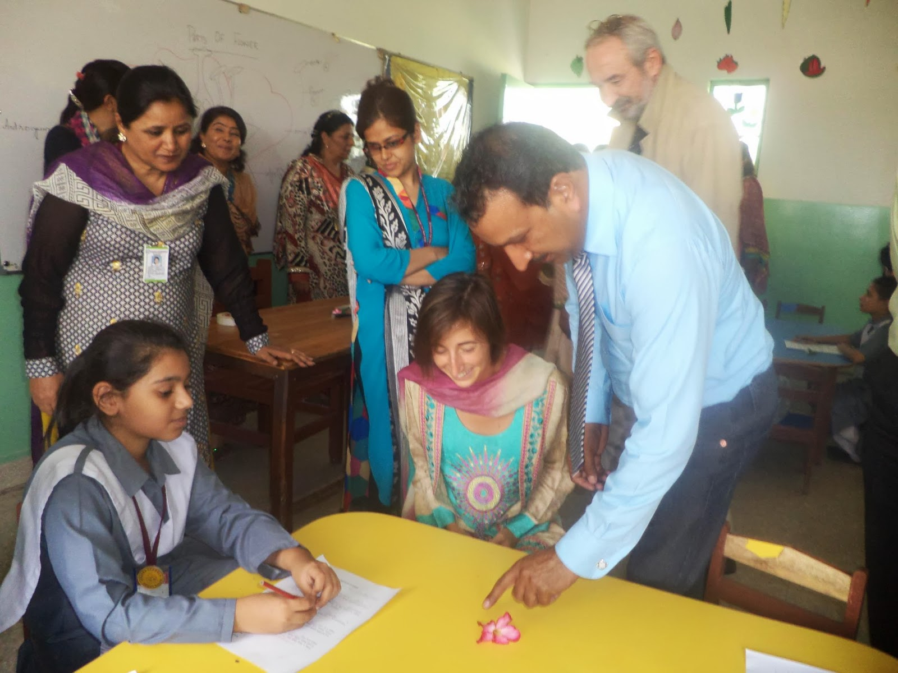

2013-05-31
Here, you can read the press release from the Pakistan Science Foundation, and here one of the press articles (from the Lahore Times).

← Retour aux actualités
Now Pakistan !
After India, it's time for PAKISTAN !
We are wonderfully welcomed in Karachi by the Pakistan Science Fundation : when we arrived, even though we had a lot of delay because of immigration issues (again), everything was planned for us ! The pakistani dress (Clem loves it), the planning for the days to come with many visits & meeting with eminent scientists, and even many meetings with young students (that welcomed us by throwing rose petals at us !) and a visit of the city !
The first thing we discovered in the city and really liked : the artistic sense of the people. Just look in the streets ! All the buses, the tuk-tuk are richly decorated with many colors and add-ons, each is unique !
Here, you can read the press release from the Pakistan Science Foundation, and here one of the press articles (from the Lahore Times).
Après l'Inde, bienvenu au Pakistan ! Nous sommes merveilleusement accueillis à Karachi pas la Pakistan Science Fundation, le grand centre scientifique du pays. Malgré nos heures de retard pour cause de problèmes avec les services d'immigration (de nouveau), tout est organisé à la perfection !
Un diner de réception, des rencontres avec d'éminents scientifiques, des visites dans des écoles (et accueil par des lancers de pétales de rose !) et dans la ville, et même une robe pakistanaise pour Clem (qui l'adore)
La première chose que nous avons apprécié dans la ville à la sortie de l'aéroport : la créativité et le sens artistique des habitants. Regardez dans la rue ! Le moindre bus, le moindre tuk-tuk est richement décoré avec pleins de couleurs et d'ajouts, chacun est unique !
Vous pouvez lire le communiqué de presse de la Pakistan Science Foundation, ainsi que l'un des articles de presse qui a relaté notre passage (du Lahore Times).
{kind=link}

{kind=link}